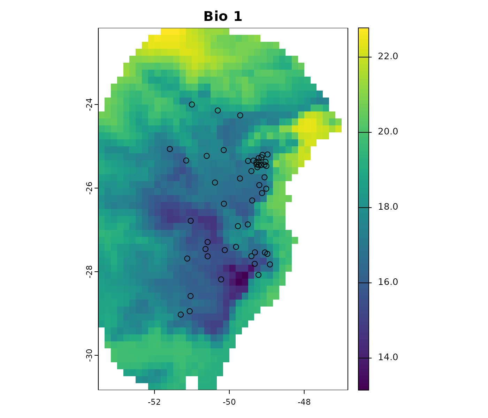

Prepare Data for Model Calibration
prepare_data.Rmd- Description
- Getting ready
- Prepare data
- Prepare user pre-processed data
- Saving a prepared_data object
Description
Before starting the ENM process, data must be formatted in a specific
structure required by functions in kuenm2. This
vignette guides users through the steps necessary to prepare occurrence
data and environmental predictors using built-in tools. It covers the
use of prepare_data() and prepare_user_data()
to generate standardized objects, which are essential for model
calibration. The vignette also demonstrates options for applying PCA,
incorporating sampling bias, and saving prepared data for later use.
Getting ready
If kuenm2 has not been installed yet, please do so. See the Main guide for installation instructions. See the basic data cleaning guide for some steps on cleaning data.
Use the following lines of code to load kuenm2 and any other required packages, and define a working directory (if needed). In general, setting a working directory in R is considered good practice, as it provides better control over where files are read from or saved to. If users are not working within an R project, we recommend setting a working directory, since at least one file will be saved at later stages of this guide.
# Load packages
library(kuenm2)
library(terra)
# Current directory
getwd()
# Define new directory
#setwd("YOUR/DIRECTORY") # uncomment this line if setting a new directoryPrepare data
Import data
We will use occurrence records provided within the
kuenm2 package. Most example data in the package is
derived from Trindade &
Marques (2024). The occ_data object contains 51
occurrences of Myrcia hatschbachii, a tree endemic to Southern
Brazil. Although this example data set has three columns (species, x,
and y), users’ input data only requires two numeric columns with
longitude and latitude coordinates.
# Import occurrences
data(occ_data, package = "kuenm2")
# Check data structure
str(occ_data)
#> 'data.frame': 51 obs. of 3 variables:
#> $ species: chr "Myrcia hatschbachii" "Myrcia hatschbachii" "Myrcia hatschbachii" "Myrcia hatschbachii" ...
#> $ x : num -51.3 -50.6 -49.3 -49.8 -50.2 ...
#> $ y : num -29 -27.6 -27.8 -26.9 -28.2 ...As predictor variables, we will use other data included in the package. This data set comprises four bioclimatic variables from WorldClim 2.1 at 10 arc-minute resolution, and a categorical variable (SoilType) from SoilGrids resampled to 10 arc-minutes. All variables have been masked using a polygon that delimits the area for model calibration, which was generated by drawing a minimum convex polygon around the records with a 300 km buffer.
# Import raster layers
var <- rast(system.file("extdata", "Current_variables.tif", package = "kuenm2"))
# Check variables
plot(var)
Visualize occurrences records in geography:
# Visualize occurrences on one variable
plot(var[["bio_1"]], main = "Bio 1")
points(occ_data[, c("x", "y")], col = "black")
First steps in preparing data
The function prepare_data() is central to getting data
ready for model calibration. It handles several key steps:
-
Defining the algorithm: Users can choose between
maxnetorglm. - Generating background points: Background points area sampled from raster layers, unless provided by the user. These points serve as a reference to contrast presence records.
- Principal component analysis (PCA): An optional step that can be applied to the set of predictors in PCA.
-
Preparing calibration data: Presence records and
background points are associate with predictor values and put together
in a
data.frameto be used in the ENM. -
Data partitioning: The function divides your data
using
k-foldsto prepare training and testing sets via a cross-validation process. - Defining grid of model parameters: This helps setting up combinations of feature classes (FCs), regularization multiplier (RM) values (for Maxnet), and sets of predictor variables. An explanation of the roles of RMs and FCs in Maxent models see Merow et al. 2013.
As with any function, we recommend consulting the documentation for
more detailed explanations (e.g., help(prepare_data)). Now,
let’s prepare our data for model calibration using
prepare_data():
# Prepare data for maxnet model
d <- prepare_data(algorithm = "maxnet",
occ = occ_data,
x = "x", y = "y",
raster_variables = var,
species = "Myrcia hatschbachii",
categorical_variables = "SoilType",
n_background = 1000,
features = c("l", "q", "p", "lq", "lqp"),
r_multiplier = c(0.1, 1, 2, 3, 5))
#> Warning in handle_missing_data(occ_bg, weights): 43 rows were excluded from
#> database because NAs were found.The prepare_data() function returns a
prepared_data object, which is a list containing various
essential pieces of information fro model calibration. Below is an
example of how the object is printed to summarize its components.
print(d)
#> prepared_data object summary
#> ============================
#> Species: Myrcia hatschbachii
#> Number of Records: 1008
#> - Presence: 51
#> - Background: 957
#> Training-Testing Method:
#> - k-fold Cross-validation: 4 folds
#> Continuous Variables:
#> - bio_1, bio_7, bio_12, bio_15
#> Categorical Variables:
#> - SoilType
#> PCA Information: PCA not performed
#> Weights: No weights provided
#> Calibration Parameters:
#> - Algorithm: maxnet
#> - Number of candidate models: 610
#> - Features classes (responses): l, q, p, lq, lqp
#> - Regularization multipliers: 0.1, 1, 2, 3, 5The parts of the prepared_data object can be explored in
further detail by indexing them as in the following example.
# See first rows of calibration data
head(d$calibration_data)
#> pr_bg bio_1 bio_7 bio_12 bio_15 SoilType
#> 1 1 16.49046 18.66075 1778 12.96107 19
#> 2 1 15.46644 19.65775 1560 14.14697 19
#> 3 1 15.70560 17.99450 1652 23.27548 6
#> 4 1 17.78899 19.55600 1597 18.91694 1
#> 5 1 15.50116 18.30750 1497 15.39440 19
#> 7 1 17.42421 17.25875 1760 34.17664 6
# See first rows of formula grid
head(d$formula_grid)
#> ID Formulas R_multiplier Features
#> 1 1 ~bio_1 + bio_7 -1 0.1 l
#> 2 2 ~bio_1 + bio_7 -1 1.0 l
#> 3 3 ~bio_1 + bio_7 -1 2.0 l
#> 4 4 ~bio_1 + bio_7 -1 3.0 l
#> 5 5 ~bio_1 + bio_7 -1 5.0 l
#> 6 6 ~bio_1 + bio_12 -1 5.0 lBy default, prepare_data() prepares an object for
fitting models using maxnet. However, this can be changed
to use GLM instead. When using GLM, it is not necessary to set
regularization multipliers, as this algorithm does not utilize them.
d_glm <- prepare_data(algorithm = "glm",
occ = occ_data,
x = "x", y = "y",
raster_variables = var,
species = "Myrcia hatschbachii",
categorical_variables = "SoilType",
n_background = 300,
features = c("l", "q", "p", "lq", "lqp"),
r_multiplier = NULL) #Not necessary with glms
#> Warning in handle_missing_data(occ_bg, weights): 8 rows were excluded from
#> database because NAs were found.
#Print object
d_glm
#> prepared_data object summary
#> ============================
#> Species: Myrcia hatschbachii
#> Number of Records: 343
#> - Presence: 51
#> - Background: 292
#> Training-Testing Method:
#> - k-fold Cross-validation: 4 folds
#> Continuous Variables:
#> - bio_1, bio_7, bio_12, bio_15
#> Categorical Variables:
#> - SoilType
#> PCA Information: PCA not performed
#> Weights: No weights provided
#> Calibration Parameters:
#> - Algorithm: glm
#> - Number of candidate models: 122
#> - Features classes (responses): l, q, p, lq, lqpBy default, prepare_data() extracts background points
from the entire extent of the provided raster variables. If you have a
species-specific polygon defining the calibration area, you can use it
to mask the raster variables and delimit the calibration area. For
example, let’s create a 100km buffer around the occurrence records:
#Convert dataframe with occurrences to SpatVector
pts <- vect(occ_data, geom = c(x = "x", y = "y"), crs = "EPSG:4326")
#Create buffer
b <- buffer(x = pts, width = 100000) #Width in meters
#Aggregate buffers
b <- terra::aggregate(b)
#Plot buffer
plot(b)
points(occ_data[, c("x", "y")], col = "black")
Now, let’s use this new polygon to mask the variables within
prepare_data(). Let’s also increase the number of
background points to 1,000:
d_buffer <- prepare_data(algorithm = "maxnet",
occ = occ_data,
x = "x", y = "y",
raster_variables = var,
mask = b, #Polygon to mask variables
species = "Myrcia hatschbachii",
categorical_variables = "SoilType",
n_background = 1000,
features = c("l", "q", "p", "lq", "lqp"),
r_multiplier = c(0.1, 1, 2, 3, 5))
#> 'n_background' >= initial number of points, using all points.
#> Warning in handle_missing_data(occ_bg, weights): 25 rows were excluded from
#> database because NAs were found.Note the warning message: “n_background’ >= initial number of points, using all points”. This occurs because, after masking the variables, the total number of pixels within the buffer is less than the specified n_background (1,000). In such cases, all available points within the calibration area will be used as background points.
In the following examples, we’ll use the object
d_maxnet, which was prepared for the maxnet algorithm
without a mask. However, all functions are compatible with objects
prepared for GLM as well.
Exploring calibration data
Users can visualize the distribution of predictor values for
occurrence records, background points, and the entire calibration area
using histograms. An example is presented below. See full documentation
with help(explore_calibration_hist) and
help(plot_explore_calibration).
# Prepare histogram data
calib_hist <- explore_calibration_hist(data = d, raster_variables = var,
include_m = TRUE)
# Plot histograms
plot_explore_calibration(explore_calibration = calib_hist)
The gray bars represent values across the entire calibration area. Blue bars show values for the background, while green bars display values at presence points (magnified by a factor of 2 for improved visualization). You can customize both the colors and the magnification factor.
Additionally, users can explore the geographic distribution of
occurrence and background points. See full documentation with
help(explore_calibration_geo).
pbg <- explore_calibration_geo(data = d, raster_variables = var[[1]],
plot = TRUE)
Note that, by default, background points are selected randomly within the calibration area. However, users can influence the spatial distribution of background, increasing or decreasing the probability of selection in certain regions, by providing a bias file (as demonstrated in the next section).
Using a bias file
A bias file is a SpatRaster object that contains values
that will influence the selection of background points within the
calibration area. This can be particularly useful for mitigating
sampling bias, for instance, by incorporating the density of records
from a target group (as discussed in Ponder et
al. 2001, Anderson et
al. 2003, and Barber et
al. 2020).
The bias file must have the same extent, resolution, and number of cells as your raster variables, unless a mask is supplied. If a mask is used, the extent of the bias file should encompass or be larger than the mask extent.
Let’s illustrate this with an example bias file included in the
package. This SpatRaster has lower values in the center and
higher values towards the borders:
# Import a bias file
bias <- rast(system.file("extdata", "bias_file.tif", package = "kuenm2"))
plot(bias)
We will now use this bias file to prepare two new datasets: one where the bias effect is “direct” (higher probability in regions with higher bias values) and another where the effect is “inverse” (higher probability in regions with lower bias values):
# Using bias as a direct effect in sampling
d_bias_direct <- prepare_data(algorithm = "maxnet",
occ = occ_data,
x = "x", y = "y",
raster_variables = var,
species = "Myrcia hatschbachii",
categorical_variables = "SoilType",
n_background = 1000,
bias_file = bias, bias_effect = "direct", # bias parameters
features = c("l", "q", "p", "lq", "lqp"),
r_multiplier = c(0.1, 1, 2, 3, 5))
#> Warning in handle_missing_data(occ_bg, weights): 57 rows were excluded from
#> database because NAs were found.
# Using bias as an indirect effect in sampling
d_bias_inverse <- prepare_data(algorithm = "maxnet",
occ = occ_data,
x = "x", y = "y",
raster_variables = var,
species = "Myrcia hatschbachii",
categorical_variables = "SoilType",
n_background = 1000,
bias_file = bias, bias_effect = "inverse", # bias parameters
features = c("l", "q", "p", "lq", "lqp"),
r_multiplier = c(0.1, 1, 2, 3, 5))
#> Warning in handle_missing_data(occ_bg, weights): 45 rows were excluded from
#> database because NAs were found.
# Compare background points generated randomly versus with bias effects
## Saving original plotting parameters
original_par <- par(no.readonly = TRUE)
## Adjusting plotting grid
par(mfrow = c(2,2))
## The plots to show sampling bias effects
plot(bias, main = "Bias file")
explore_calibration_geo(d, raster_variables = var[[1]],
main = "Random Background")
explore_calibration_geo(d_bias_direct, raster_variables = var[[1]],
main = "Direct Bias Effect")
explore_calibration_geo(d_bias_inverse, raster_variables = var[[1]],
main = "Inverse Bias Effect")
par(original_par) # Reset gridNote that when the bias effect is “direct”, the majority of the background points are sampled from the borders of the calibration area, corresponding to higher bias values. Conversely, with an “inverse” bias effect, most background points are selected from the center, where bias values are lower.
PCA for variables
A common approach in ENM involves summarizing the information from a set of predictor variables into a smaller set of uncorrelated variables using Principal Component Analysis (PCA) (see Cruz-Cardenaz et al. 2014 for an example). In kuenm2 users can perform a PCA internally or use variables that have been externally prepared as PCs.
Internal PCA
kuenm2 can perform all PCA transformations
internally, eliminating the need to prepare the new PC variables for
each scenario of projection. This is particularly advantageous when
projecting model results across multiple time scenarios (e.g., various
Global Climate Models for different future periods). By performing PCA
internally, you only need to store the raw environmental variables
(e.g., bio_1, bio_2, etc.) on your directory,
and the functions will handle the PCA transformation as needed.
Let’s explore how to implement this:
# Prepare data for maxnet models using PCA parameters
d_pca <- prepare_data(algorithm = "maxnet",
occ = occ_data,
x = "x", y = "y",
raster_variables = var,
do_pca = TRUE, center = TRUE, scale = TRUE, # PCA parameters
species = "Myrcia hatschbachii",
categorical_variables = "SoilType",
n_background = 1000,
features = c("l", "q", "p", "lq", "lqp"),
r_multiplier = c(0.1, 1, 2, 3, 5))
#> Warning in handle_missing_data(occ_bg, weights): 43 rows were excluded from
#> database because NAs were found.
print(d_pca)
#> prepared_data object summary
#> ============================
#> Species: Myrcia hatschbachii
#> Number of Records: 1008
#> - Presence: 51
#> - Background: 957
#> Training-Testing Method:
#> - k-fold Cross-validation: 4 folds
#> Continuous Variables:
#> - bio_1, bio_7, bio_12, bio_15
#> Categorical Variables:
#> - SoilType
#> PCA Information:
#> - Variables included: bio_1, bio_7, bio_12, bio_15
#> - Number of PCA components: 4
#> Weights: No weights provided
#> Calibration Parameters:
#> - Algorithm: maxnet
#> - Number of candidate models: 610
#> - Features classes (responses): l, q, p, lq, lqp
#> - Regularization multipliers: 0.1, 1, 2, 3, 5The elements calibration data and formula grid have now been
generated considering the principal components (PCs). By default, all
continuous variables were included in the PCA, while categorical
variables (e.g., “SoilType”) were excluded. The default settings for the
number of PCs selected retain the axes that collectively explain 95% of
the total variance, and then further filter these, keeping only those
axes that individually explain at least 5% of the variance. These
parameters can be changed using other arguments in the function
prepare_data
# Check calibration data
head(d_pca$calibration_data)
#> pr_bg PC1 PC2 PC3 PC4 SoilType
#> 1 1 1.48690341 1.01252697 0.1180156 -0.09119257 19
#> 2 1 1.46028074 0.17701144 1.1573461 -0.12326796 19
#> 3 1 0.82676494 1.21965795 0.8145129 -0.67588891 6
#> 4 1 0.62680441 0.03967459 0.1525997 0.18784282 1
#> 5 1 0.94584897 0.93302089 1.4382424 -0.03192094 19
#> 7 1 -0.07597437 1.55268331 -0.2007953 -0.98153204 6
# Check formula grid
head(d_pca$formula_grid)
#> ID Formulas R_multiplier Features
#> 1 1 ~PC1 + PC2 -1 0.1 l
#> 2 2 ~PC1 + PC2 -1 1.0 l
#> 3 3 ~PC1 + PC2 -1 2.0 l
#> 4 4 ~PC1 + PC2 -1 3.0 l
#> 5 5 ~PC1 + PC2 -1 5.0 l
#> 6 6 ~PC1 + PC3 -1 5.0 l
# Explore variables distribution
calib_hist_pca <- explore_calibration_hist(data = d_pca, raster_variables = var,
include_m = TRUE, breaks = 7)
plot_explore_calibration(explore_calibration = calib_hist_pca)
As the PCA was performed internally, the prepared_data
object contains all the necessary information to transform the raw
environmental variables into the required PCs This means that
when predicting or projecting models, users should provide raw raster
variables, and the PCs will be obtained internally in the
function.
External PCA
Alternatively, users can perform a PCA with their data by using the
perform_pca() function, or one of their preference. See
full documentation with help(perform_pca). Se an example
with perform_pca() below:
pca_var <- perform_pca(raster_variables = var, exclude_from_pca = "SoilType",
center = TRUE, scale = TRUE)
# Plot
plot(pca_var$env)
Now, let’s use the PCs generated by perform_pca() to
prepare the data:
# Prepare data for maxnet model using PCA variables
d_pca_extern <- prepare_data(algorithm = "maxnet",
occ = occ_data,
x = "x", y = "y",
raster_variables = pca_var$env, # Output of perform_pca()
do_pca = FALSE, # Set to FALSE because variables are PCs
species = "Myrcia hatschbachii",
categorical_variables = "SoilType",
n_background = 1000,
features = c("l", "q", "p", "lq", "lqp"),
r_multiplier = c(0.1, 1, 2, 3, 5))
#> Warning in handle_missing_data(occ_bg, weights): 43 rows were excluded from
#> database because NAs were found.
print(d_pca_extern)
#> prepared_data object summary
#> ============================
#> Species: Myrcia hatschbachii
#> Number of Records: 1008
#> - Presence: 51
#> - Background: 957
#> Training-Testing Method:
#> - k-fold Cross-validation: 4 folds
#> Continuous Variables:
#> - PC1, PC2, PC3, PC4
#> Categorical Variables:
#> - SoilType
#> PCA Information: PCA not performed
#> Weights: No weights provided
#> Calibration Parameters:
#> - Algorithm: maxnet
#> - Number of candidate models: 610
#> - Features classes (responses): l, q, p, lq, lqp
#> - Regularization multipliers: 0.1, 1, 2, 3, 5Note that since PCA was performed externally,
do_pca = FALSE is set within the prepare_data
function. This is crucial because setting it to TRUE would
incorrectly apply PCA to variables that are already PCs.
Consequently, the prepared_data object in this scenario
does not store any PCA-related information. This means that when users
predict or project models, they must must provide the
PCs instead of the raw raster variables.
# Check calibration data
head(d_pca_extern$calibration_data)
#> pr_bg PC1 PC2 PC3 PC4 SoilType
#> 1 1 1.48690341 1.01252697 0.1180156 -0.09119257 19
#> 2 1 1.46028074 0.17701144 1.1573461 -0.12326796 19
#> 3 1 0.82676494 1.21965795 0.8145129 -0.67588891 6
#> 4 1 0.62680441 0.03967459 0.1525997 0.18784282 1
#> 5 1 0.94584897 0.93302089 1.4382424 -0.03192094 19
#> 7 1 -0.07597437 1.55268331 -0.2007953 -0.98153204 6
# Check formula grid
head(d_pca_extern$formula_grid)
#> ID Formulas R_multiplier Features
#> 1 1 ~PC1 + PC2 -1 0.1 l
#> 2 2 ~PC1 + PC2 -1 1.0 l
#> 3 3 ~PC1 + PC2 -1 2.0 l
#> 4 4 ~PC1 + PC2 -1 3.0 l
#> 5 5 ~PC1 + PC2 -1 5.0 l
#> 6 6 ~PC1 + PC3 -1 5.0 lPrepare user pre-processed data
If users already have data that has been prepared for calibration,
they can use the prepare_user_data() function to create the
object required for model calibration. User-prepared calibration data
must be a data.frame that includes a column indicating
presence (1) and background (0)
records, along with columns with values for each of your
variables. The package includes an example of such a
data.frame for reference. See an example of its use
below:
data("user_data", package = "kuenm2")
head(user_data)
#> pr_bg bio_1 bio_7 bio_12 bio_15 SoilType
#> 1 1 16.49046 18.66075 1778 12.96107 19
#> 2 1 15.46644 19.65775 1560 14.14697 19
#> 3 1 15.70560 17.99450 1652 23.27548 6
#> 4 1 17.78899 19.55600 1597 18.91694 1
#> 5 1 15.50116 18.30750 1497 15.39440 19
#> 7 1 17.42421 17.25875 1760 34.17664 6The prepare_user_data() function operates similarly to
prepare_data(), but with a key difference; instead of
requiring a data.frame of occurrence coordinates and a
SpatRaster of predictor variables, it takes your already
prepared user data.frame (see below). See full
documentation with help(prepare_user_data).
# Prepare data for maxnet model
data_user <- prepare_user_data(algorithm = "maxnet",
user_data = user_data, # user-prepared data.frame
pr_bg = "pr_bg",
species = "Myrcia hatschbachii",
categorical_variables = "SoilType",
features = c("l", "q", "p", "lq", "lqp"),
r_multiplier = c(0.1, 1, 2, 3, 5))
data_user
#> prepared_data object summary
#> ============================
#> Species: Myrcia hatschbachii
#> Number of Records: 527
#> - Presence: 51
#> - Background: 476
#> Training-Testing Method:
#> - k-fold Cross-validation: 4 folds
#> Continuous Variables:
#> - bio_1, bio_7, bio_12, bio_15
#> Categorical Variables:
#> - SoilType
#> PCA Information: PCA not performed
#> Weights: No weights provided
#> Calibration Parameters:
#> - Algorithm: maxnet
#> - Number of candidate models: 610
#> - Features classes (responses): l, q, p, lq, lqp
#> - Regularization multipliers: 0.1, 1, 2, 3, 5This function also allows you to provide a list of folds for
cross-validation to be used during model calibration. If
user_folds is NULL, the function will
automatically split your data based on the number of folds specified by
the kfolds argument. Internal PCA for variables is also
available with this function.
Saving a prepared_data object
The prepared_data object is crucial for the next step in
the ENM workflow in kuenm2, model calibration. As this
object is essentially a list, users can save it to a local directory
using saveRDS(). Saving the object facilitates loading it
back into your R session later using readRDS(). See an
example below: